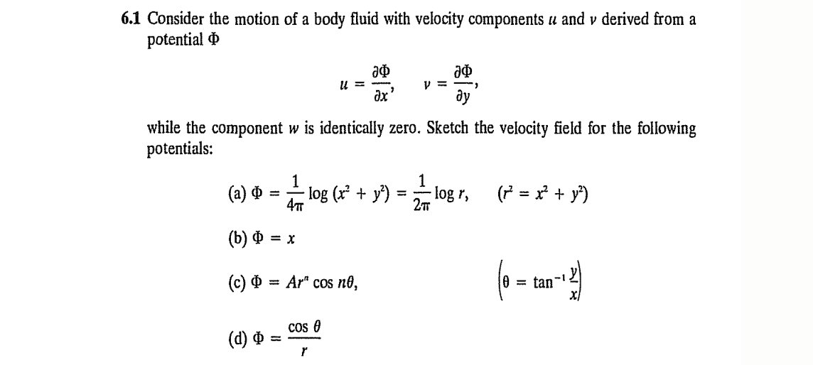

The Cartan decomposition of the velocity gradient vector yields \[ \frac{\partial v_i}{\partial x_j} = \frac{1}{2} \left( \frac{\partial v_i}{\partial x_j} + \frac{\partial v_j}{\partial x_i} \right) + \frac{1}{2} \left( \frac{\partial v_i}{\partial x_j} - \frac{\partial v_j}{\partial x_i} \right) \] where the left term on the right hand side is a symmetric tensor and the one on the right is a skew-symmetric tensor.
Provide a clear definition of vorticity in a flow field. If possible, provide illustrations or suggest references or sources that point graphical illustrations depicting vorticity.
